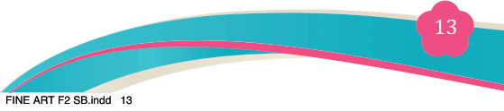
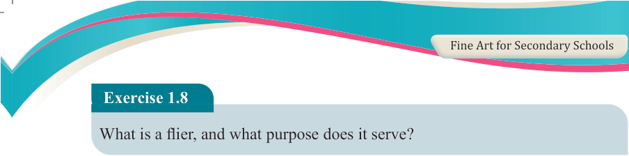
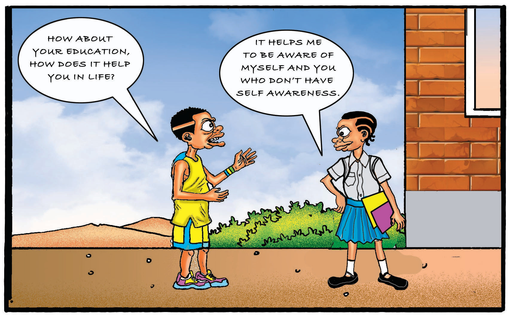
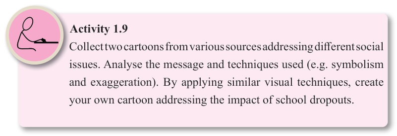

Fine Art for Secondary Schools

13
Student’s Book Form Two

Exercise 1.8
What is a flier, and what purpose does it serve?
(d) Cartoons and Animations
Cartoons and animations serve not only as entertainment tools; but also as influential
forms of art that can shape societal views and inspire change. By combining
engaging visuals and relatable characters, Cartoons and animations have a unique
ability to simplify complex issues, making them understandable and thought
provoking. The messages communicated through cartoons and animations can influence audiences, leading to a shift in societal perspectives and behaviours.
Figure 1.12 depicts the use of cartoons in influencing social change.

Figure 1.12: Cartoon bases on the functionalism art theory

Activity 1.9
Collect two cartoons from various sources addressing different social issues. Analyse the message and techniques used (e.g. symbolism and exaggeration). By applying similar visual techniques, create your own cartoon addressing the impact of school dropouts.
04/08/2025 13:54